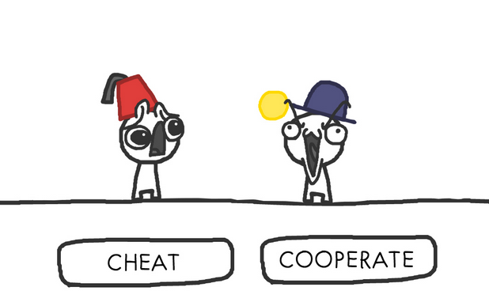

It's all about who you know. – They

Form a circle
Form a circle
An implementation of promise theory
cf-agent
cf-agent is the command you will use most often. It is used to run
policy(code) and ensure your system is in the desired state. If you are running
any CFEngine command from the command line, there's a greater than 99% chance
that this is it.
cf-monitord
cf-monitord monitors various statistics about the running system. This
information is made available in the form of classes and variables.
You'll almost never use cf-monitord directly. However the data provided by
cf-monitord is available to cf-agent.
cf-execd
cf-execd is a periodic task scheduler. You can think of it like cron on
steroids.
By default CFEngine runs and enforces policies every five minutes. cf-execd
is responsible for making that happen.
cf-serverd
cf-serverd runs on the CFEngine server, as well as all clients.
cf-runagent requests
cf-runagent allows you to request ad-hoc policy runs. I rarely use it.
type:
context::
"promiser" -> "promisee"
----------|
attribute1 => "value", |
attribute2 => body; |-- Promise Body
----------|
bundle agent main {
files:
linux::
"/tmp/example" -> { "Instructor", "Students" }
create => "true",
touch => "true",
action => warn_only;
}
warning: Need to touch (update time stamps) for '/tmp/multiple-attributes', but only a warning was promised!
apache2 package is installedhttpd process is runninghttpd process is restarted when the configuration changesbundle type name
{
type:
context::
"promiser" -> { "promisee" }
attribute1 => "value",
attribute2 => value;
type:
context::
"promiser" -> { "promisee" }
attribute1 => "value",
attribute2 => value;
}
Bundles apply to the binary that executes them. E.g., agent bundles apply to
cf-agent while server bundles apply to cf-serverd.
Bundles of type common apply to any CFEngine binary.
bundle common globals
{
vars:
"tool_path" string => "/srv/tools"
}
bundle server my_access_rules
{
access:
"$(globals.tool_path)"
admit_ips => { "192.168.0.0/24" };
}
bundle agent my_policy
{
vars:
"config[PermitRootLogin]" string => "no";
"config[Port]" string => "22";
files:
"/etc/ssh/sshd_config"
edit_line => set_line_based( "my_policy.config", " ", "\s+", ".*", "\s*#\s*");
}
bundle monitor measure_cf_serverd
{
vars:
"pid[cf-serverd]"
string => readfile( "$(sys.piddir)/cf-serverd.pid", 4k );
"reg_stat[rss]" string =>"(?:[^\s+]*\s+){23}([^\s]+)(?:.*)";
measurements:
"/proc/$(pid[cf-serverd])/stat"
handle => "cf_serverd_vsize",
stream_type => "file",
data_type => "int",
history_type => "weekly",
units => "pages in memory",
match_value => line_match_value(".*", $(reg_stat[rss]) );
}
Created by Nick Anderson